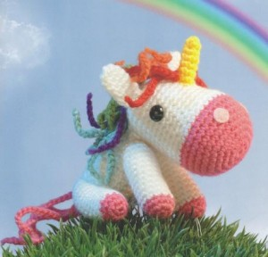
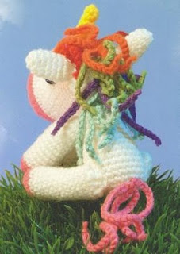

Единорог – мифическое существо, похожее на коня с большим рогом посередине лба.

>>>ссылка на прект в figma<<<
Единорог – волшебное животное из мифов и легенд, символ таинственного мира грез и исполнения желаний. Наш
единорог-амигуруми с разноцветной гривой выглядит необыкновенно и привлекательно, он словно появился из
чудесной
детской сказки.
Из чего состоит:
Размер: примерно 12см в высоту и 15см в длину. Размер может отличаться в зависимости от используемой вами
пряжи.
Голова
Вяжем розовой пряжей
1 ряд. 2 ВП, 7 СТ во вторую петлю от крючка
2 ряд. По кругу 2 СТ в каждый столбик предыдущего ряда (итого 14 СТ)
3 ряд. *1 СТ, 2 СТ в столбик предыдущего ряда*, повторить 7 раз (21 СТ)
4 ряд. *2 СТ, 2 СТ в столбик предыдущего ряда*, повторить 7 раз (28 СТ)
5 ряд. *3 СТ, 2 СТ в столбик предыдущего ряда*, повторить 7 раз (35 СТ)
6 – 9 ряд. 35 СТ
Уши
Вяжем белой пряжей
1 ряд. 2 ВП, 4 СТ во вторую петлю от крючка
2 ряд. По кругу 2 СТ в каждый столбик предыдущего ряда (итого 8 СТ)
3 – 7 ряд. 8 СТ
Завершить полустолбиком, оставив нить для пришивания. Пришить уши к голове единорога.
Рог единорога
Вяжем желтой пряжей
1 ряд. 2 ВП, 47 СТ во вторую петлю от крючка
2 ряд. 4 СТ
3 ряд. *1 СТ, 2 СТ в столбик предыдущего ряда*, повторить еще раз (6 СТ)
4 – 8 ряд. 6 СТ
Завершить полустолбиком, оставив нить для пришивания. Пришить рог к голове единорога.
Тело единорога
Вяжем белой пряжей
1 ряд. 2 ВП, 6 СТ во вторую петлю от крючка
2 ряд. По кругу 2 СТ в каждый столбик предыдущего ряда (итого 12 СТ)
3 ряд. *1 СТ, 2 СТ в столбик предыдущего ряда*, повторить 6 раз (18 СТ)
4 ряд. *2 СТ, 2 СТ в столбик предыдущего ряда*, повторить 6 раз (24 СТ)
5 – 10 ряд. 24 СТ
11 ряд. *2 СТ, 2 СТ вместе*, повторить 6 раз (18 СТ)
12 – 14 ряд. 18 СТ
15 ряд. *1 СТ, 2 СТ вместе*, повторить 6 раз (12 СТ)
16 – 17 ряд. 12 СТ
Завершить полустолбиком, набить тело единорога, пришить к голове.
Ноги
Начинаем вязать розовым цветом
1 ряд. 2 ВП, 6 СТ во вторую петлю от крючка
2 ряд. По кругу 2 СТ в каждый столбик предыдущего ряда (итого 12 СТ)
3 ряд. 12 СТ
4 – 14 ряд. 12 СТ
Набить ноги не очень плотно.
15 ряд. *2 СТ вместе*, повторить 6 раз (6 СТ)
Завершить, оставив нить. Слегка набить, сшить открытый конец и пришить к телу.
Грива и Хвост
Грива
Сделать по 6 цепочек из 12 ВП каждого цвета: красного, оранжевого, зеленого, фиолетового и синего. Можно
выбрать
другие цветовые сочетания по вашему желанию.
Пришить их к голове, создавая переход цветов как у радуги (красные выше, синие ниже – смотрите фото).
Хвост
Из розовой пряжи связать 4 цепочки по 24 ВП, пришить их к телу.
